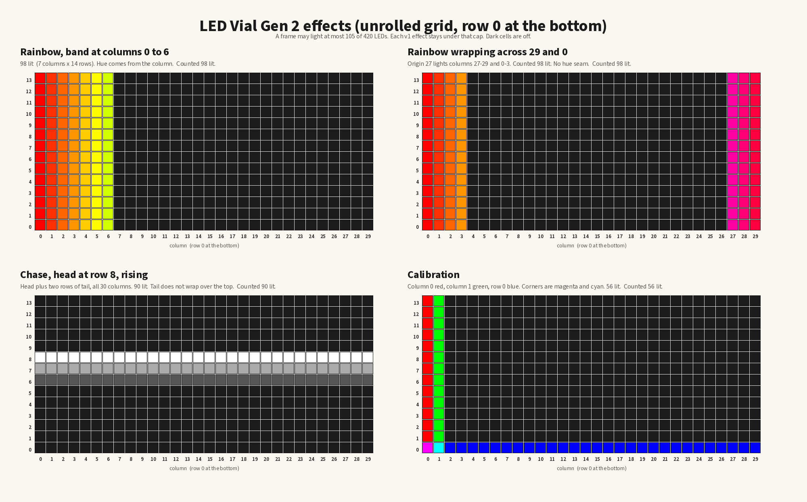
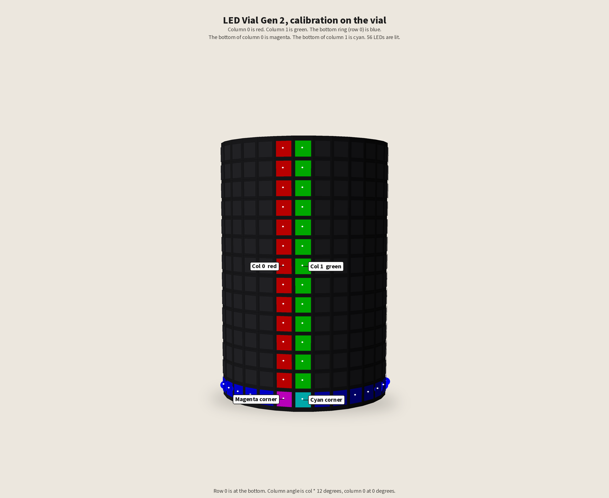
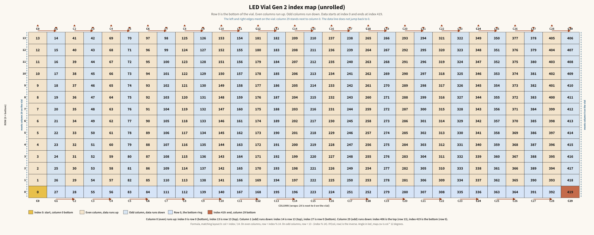
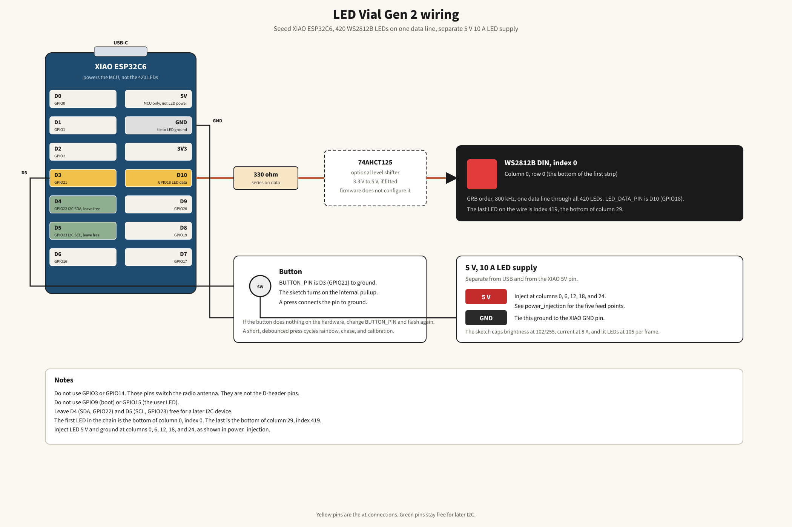
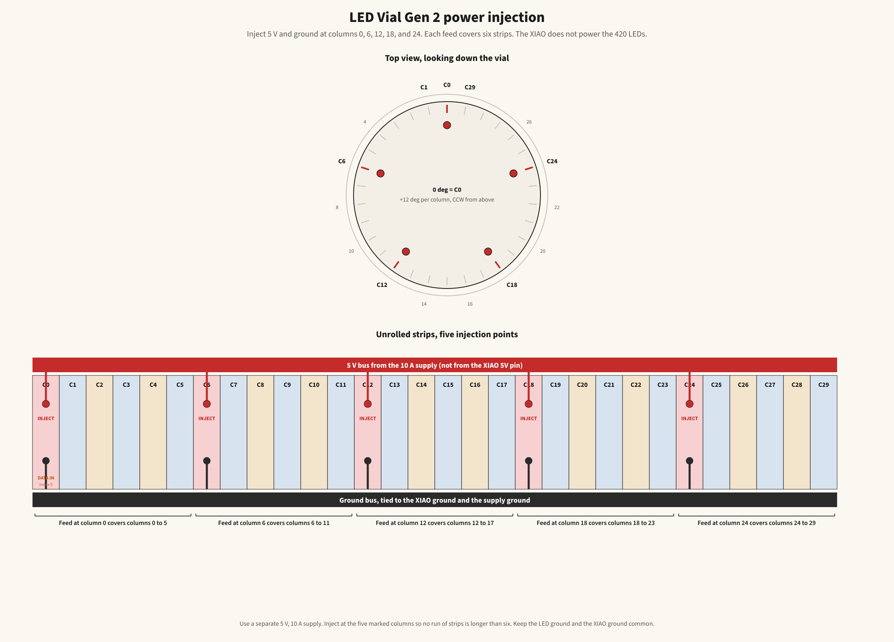

← Back to Projects
LED Vial Gen 2

About This Project
A cylindrical lantern made from 420 WS2812B LEDs. Thirty vertical strips of 14 run serpentine around a 3D printed ring. A Seeed XIAO ESP32-C6 drives the chain.
One button cycles a rainbow wrap, a rising chase, and a calibration pattern. The last choice is saved in NVS.
The LEDs use a separate 5 V 10 A supply, with power injected along the tube. The firmware caps the draw at 8 A and never lights more than 105 LEDs at once.
- Board
- Seeed XIAO ESP32-C6
- LEDs
- 420 WS2812B, 30 strips of 14
- Power
- 5 V 10 A supply, firmware cap 8 A
- Max lit
- 105 LEDs at once




